TOC
- Intro
- Table of Contents
- EKG Theory (a crash course)
- Olimex Shield + Arduino
- Code for the Olimex Shield
- Python Wrapper (Olimex-EKG-EMG)
- Usage and Comparison to Real Defibrillator
- Live Demo
- Analysis
- Questions & Thank Yous
EKG Theory
Crash Course
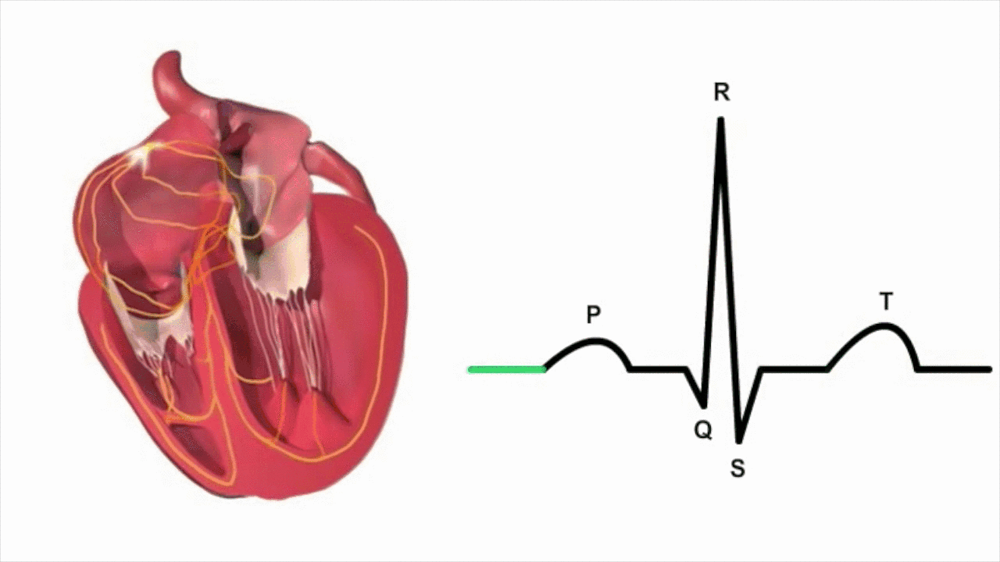
EKG Theory
Crash Course
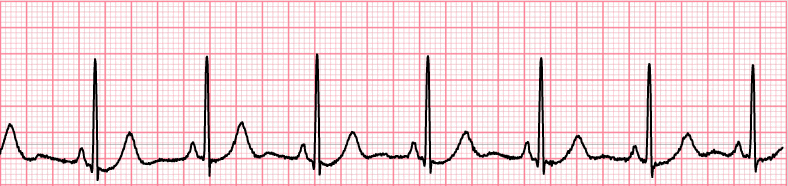
EKG Theory
Crash Course
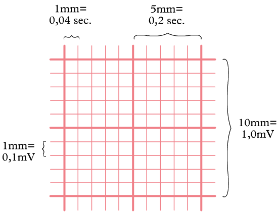
Building It
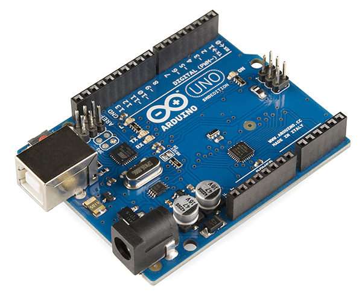 
- $7 dollar Arduino
- $50 shield
- $20 leads
- $5 red dots
- $82 TOTAL
Building It
TOTAL ~ google('$82 to euro')
Writing It
Olimex Shield Output
struct Olimexino328_packet
{
uint8_t sync0; // = 0xa5
uint8_t sync1; // = 0x5a
uint8_t version; // = 2 (packet version)
uint8_t count; // packet counter. Increases by 1 each packet.
uint16_t data[6]; // 10-bit sample (= 0 - 1023) in big endian.
uint8_t switches; // State of PD5 to PD2, in bits 3 to 0.
};Writing It
Olimex Shield Output
It streams packets that it builds at SAMPLE_FREQUENCY (125 hz)
//Read the 6 ADC inputs and store current values in Packet
for(CurrentCh = 0; CurrentCh < 6; CurrentCh++) {
ADC_Value = analogRead(CurrentCh);
// Write High Byte
TXBuf[((2*CurrentCh) + HEADERLEN)] = ((unsigned char)((ADC_Value & 0xFF00) >> 8));
// Write Low Byte
TXBuf[((2*CurrentCh) + HEADERLEN + 1)] = ((unsigned char)(ADC_Value & 0x00FF));
}
// Send Packet
for(TXIndex=0;TXIndex<17;TXIndex++){
Serial.write(TXBuf[TXIndex]);
}Writing It
ElectricGuru
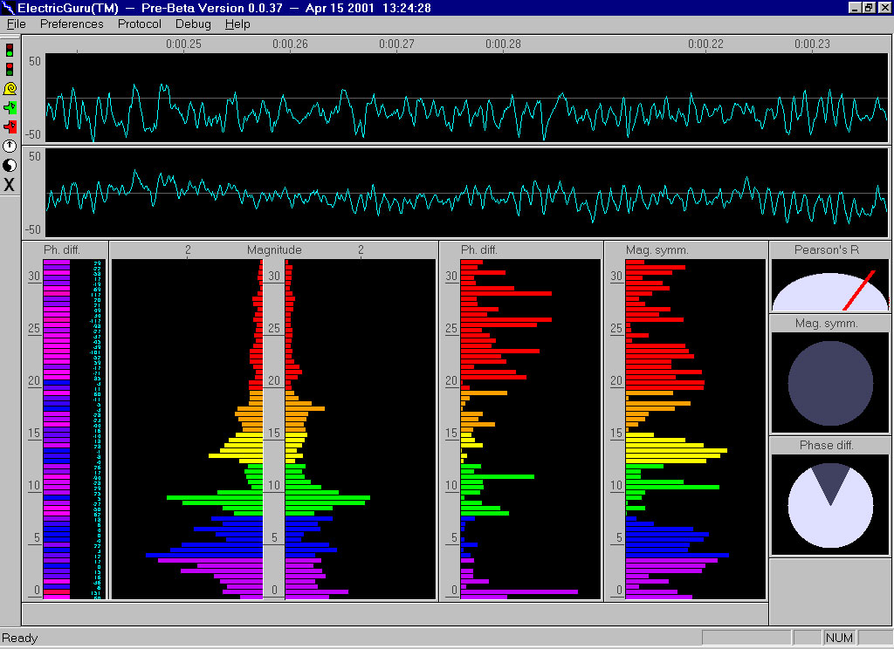
Writing It
PySerial
 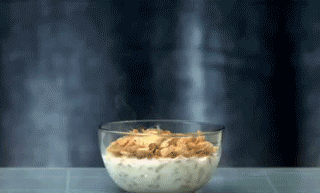
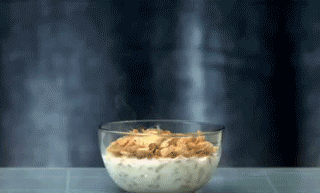
Writing It
Reading From Serial Port
class PacketStreamReader:
def __init__(self, serial):
self._serial = serial
def _get_next_packet(self):
byte0, byte1 = 0, 0
while byte0 != SYNC0 or byte1 != SYNC1:
# If we don't have enough data to do ALL of the following,
# return None.
# - Move current byte 1 into byte0 position
# - Read a new byte into byte1 (1 byte)
# - Read the rest of a packet into a buffer (PACKET_SIZE - 2 bytes)
# We need at least (PACKET_SIZE - 2) + 1 bytes before
# attempting to get the next packet.
in_waiting = self._serial.inWaiting()
if in_waiting < PACKET_SIZE - 1:
return None
byte0, byte1 = byte1, self._serial.read()
buff = bytearray()
buff.append(ord(byte0))
buff.append(ord(byte1))
# read 15 more bytes
buff.extend(self._serial.read(PACKET_SIZE -2))
return buffWriting It
How to we build broken values?
def calculate_values_from_packet_data(data):
values = []
for index in range(0, 6, 2):
# byte_a is the most significant byte and byte_b is
# the least significant byte.
byte_a, byte_b = data[index], data[index + 1]
val = (byte_a << 8) | byte_b
# For some reason the data comes in upside down.
# Flip data around a horizontal axis.
val = (val - 1024) * -1
values.append(val)
return valuesUsing It
at the command line...
$ exg -p /dev/tty.usbmodem1411 $ exg -f mock-data/nsr.bin
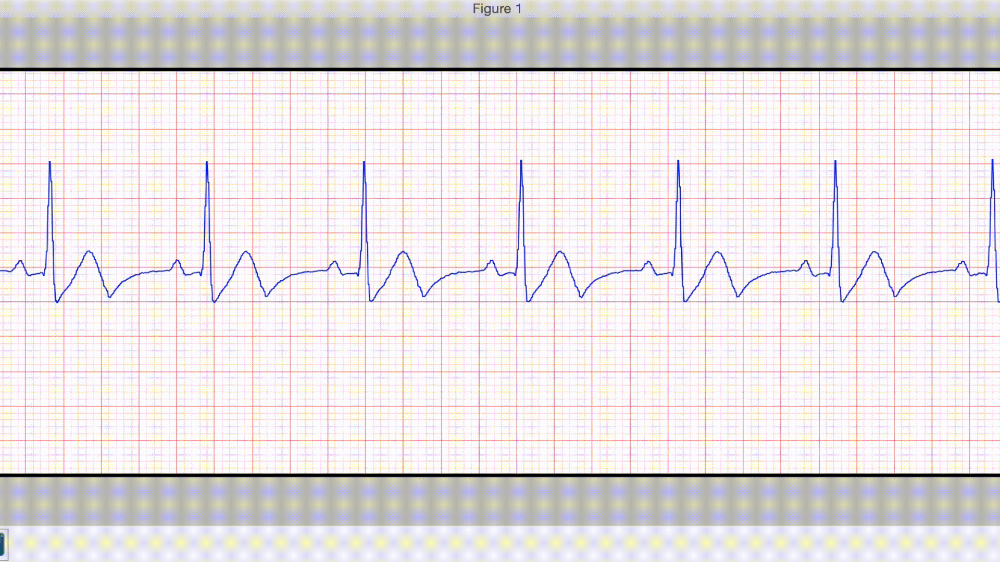
Using It
Compare
[Olimex] 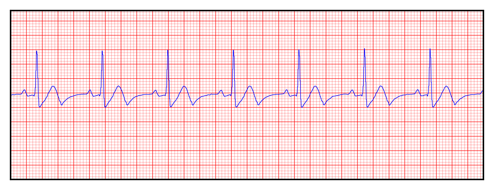
[Lifepak] 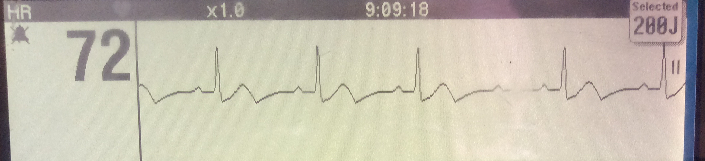
Using It
Compare
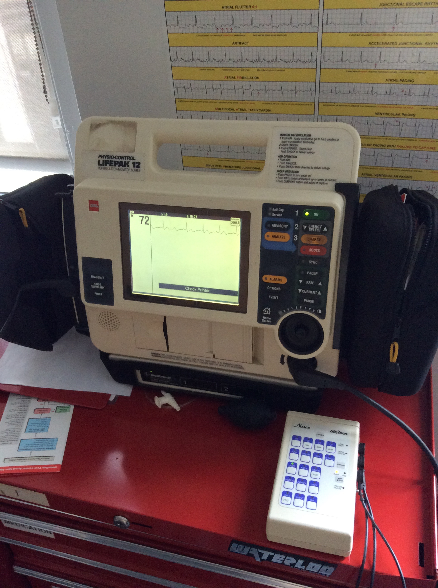
Using It
Live Demo
Can I get a volunteer?!
Analysis
- Not medical grade. Nothing but course assessment of patient.
- Time drift (1 second per minute)
Thank You
- CPR123 (For the rhythm data)
- PyCon Ireland for financial aid!
Questions?
Bibliography
[1] Anatomy & Physiology Online - Cardiac conduction system and its relationship with ECG Primal Pictures - 3D Human Anatomy https://www.youtube.com/watch?v=v3b-YhZmQu8
[2] Medical Training and Simulation LLC
[3] http://en.ecgpedia.org/wiki/File:ECGpapier.png
{kind=link}
[4] CPR123, https://www.cpr123.com/